Cooperativa sin filas
La fila
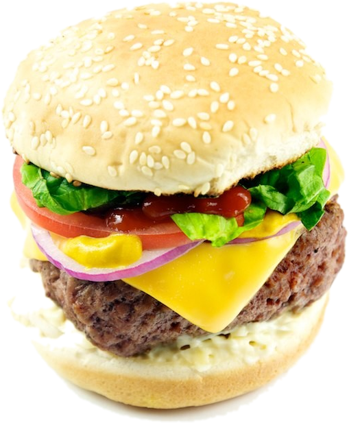
Pide desde el salón. Te avisamos cuando esté listo. Tú sigue en lo tuyo.
Foto: TheCulinaryGeek, CC BY 2.0 (recortada)
Fadori. Instituto RembrandtEscanea el código de atrás →
Así de fácil.
1 Elige todo el menú con foto
3 Recoge cuando salga en verde
Escanea y pide
Abre la cámara y apunta al código. La primera vez haces tu cuenta con tu correo y tu credencial: así nadie pide a tu nombre.
Fadori. · Proyecto sin filasInstituto Rembrandt
Arma tu recreo
Tú escoges. Nosotros la preparamos. Tú no te formas.
Pide
Foto: TheCulinaryGeek, CC BY 2.0 (recortada)
Fadori. La cooperativa del RembrandtEscanea atrás →
Lo medimos
El recreo dura30 minutos.
Antes
15 a 20 min en la fila
para ti
Con Fadori
recoges
el recreo es tuyo: come, platica, juega
Pasillo libre Nadie hace bulto frente a la cooperativa esperando su comida.
Sabes cuándo ir Tu turno sale en la pantalla y en tu teléfono.
Medición de un recreo en el Instituto Rembrandt
Haz cuentas
Fadori. Pide desde tu teléfonoInstituto Rembrandt
Tu turno
Siempre sabes en qué va.
1 En la fila Cuántos van antes que tú y cuánto falta.
2 Preparando Ya está en la plancha.
3 ¡Listo! Pasa con tu código al mostrador.
¿Se acabó algo de lo que pediste? La app te avisa y escoges otra cosa o lo quitas. No pierdes tu lugar y no pagas lo que no te dieron.
Fadori. Instituto Rembrandt
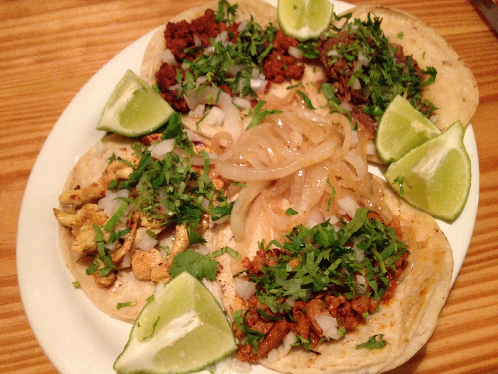
Fadori · ahora
¡Tu pedido ya está!
Turno 7 · ve por él al mostrador
Te
Tú sigue en lo tuyo. Tu teléfono suena cuando esté listo.
Foto: Phil Denton, CC BY-SA 2.0
Fadori. Cooperativa sin filasInstálala: instrucciones atrás →
Para que te llegue el aviso
Ponla en tupantalla de inicio.
iPhone
1. Ábrela en Safari2. Toca Compartir (el cuadrito con flecha)3. Agregar a inicio 4. Ábrela desde el ícono y acepta los avisos
Android
1. Ábrela en Chrome2. Toca los tres puntitos 3. Instalar app o Agregar a inicio 4. Acepta los avisos
Escanea para instalar
Se instala en segundos y no ocupa espacio como una app de tienda.
Fadori. Instituto Rembrandt
Ya puede pasar
7
Cuando salga tu número,es tu momento.
Fadori. La pantalla de turnosInstituto Rembrandt
La pantalla de la cooperativa
De un vistazosabes cuándo ir.
Verde ya está, pasa por él
Naranja se está preparando
En la fila ya lo recibimos
Y además lo dice en voz alta: «Turno 7, tu pedido está listo». Tu nombre sólo sale si tú lo eliges.
Fadori. Instituto Rembrandt
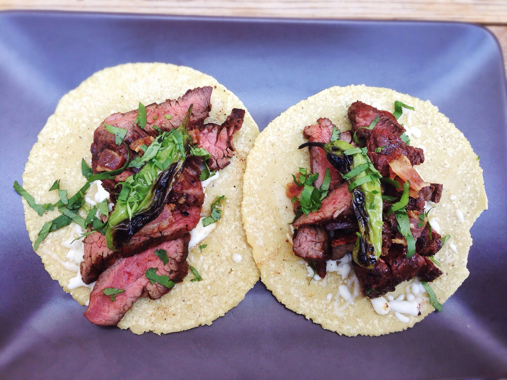
Antojo3 toques.
1 · Elige 2 · Pide 3 · Recoge
Foto: T.Tseng, CC BY 2.0
Fadori. Tacos, tortas, antojitos y másMenú completo atrás →
Todo el menú,con foto.
Pide aquí
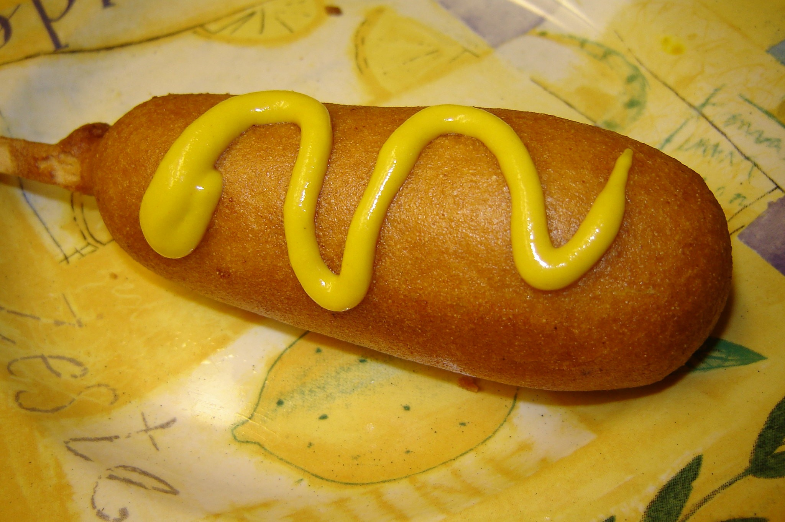
Banderilla 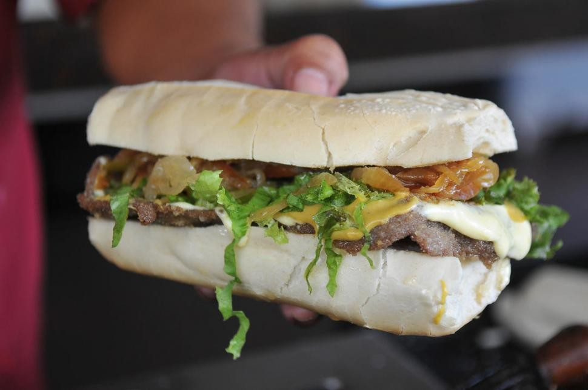
Torta de milanesa 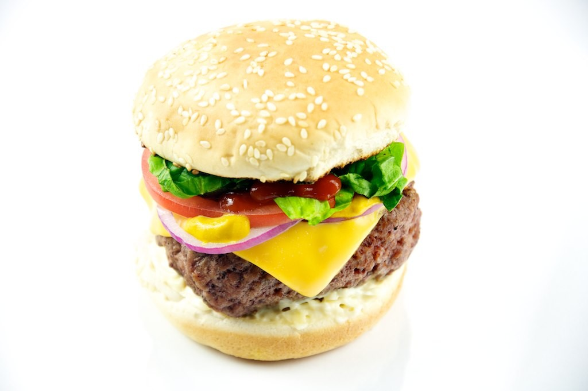
Hamburguesa Pizza individual 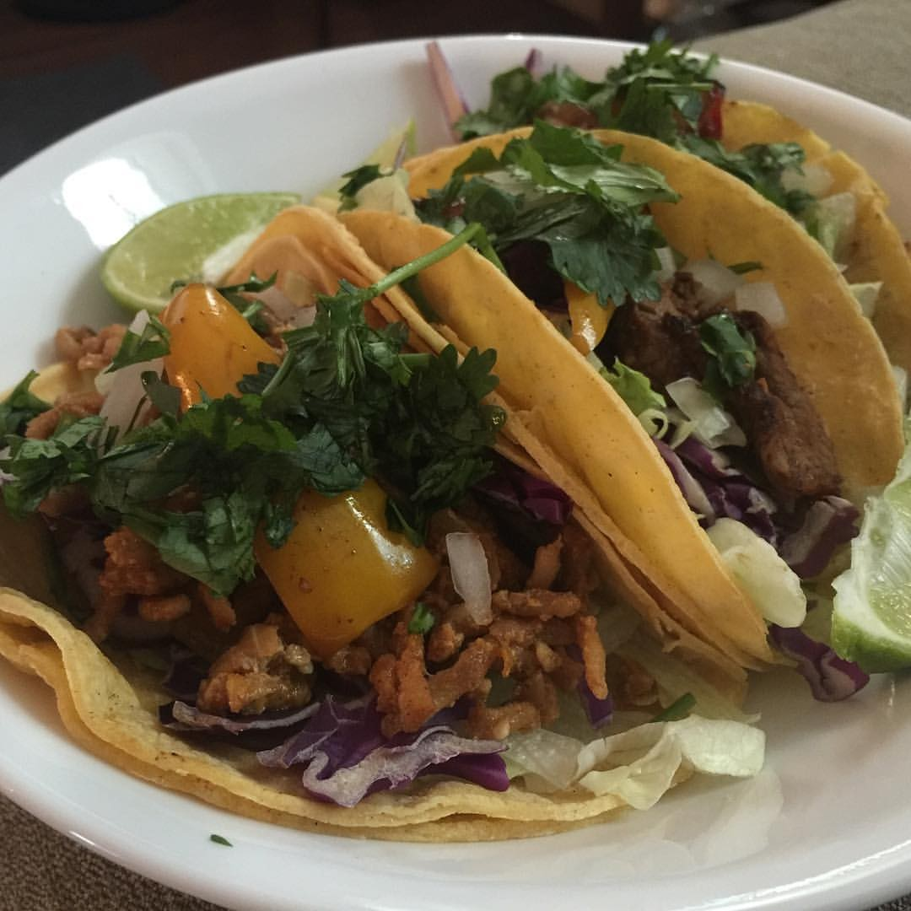
Tacos 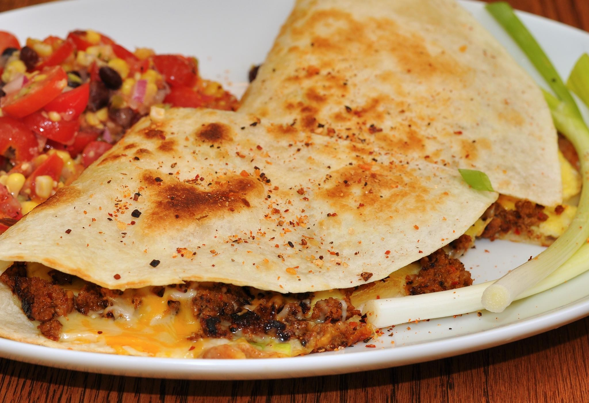
Quesadilla 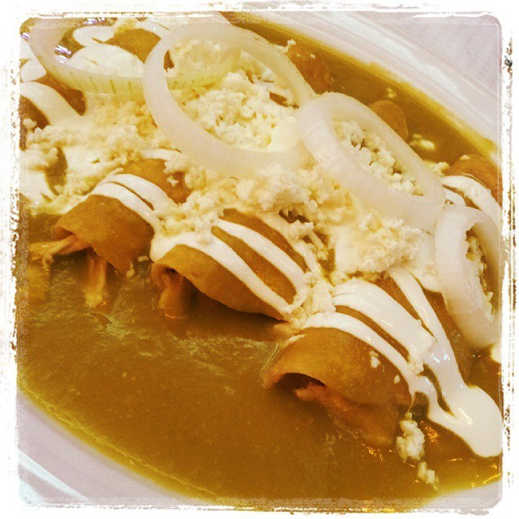
Enchiladas verdes 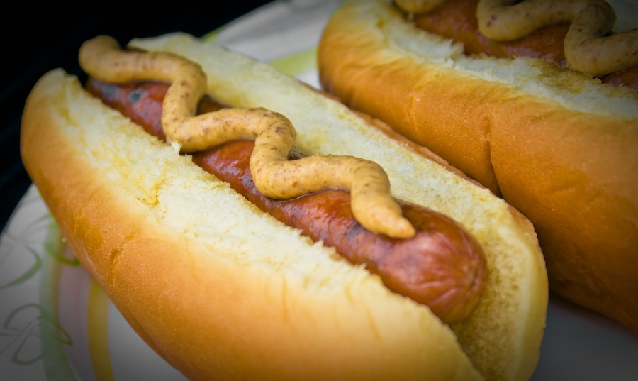
Hot dog 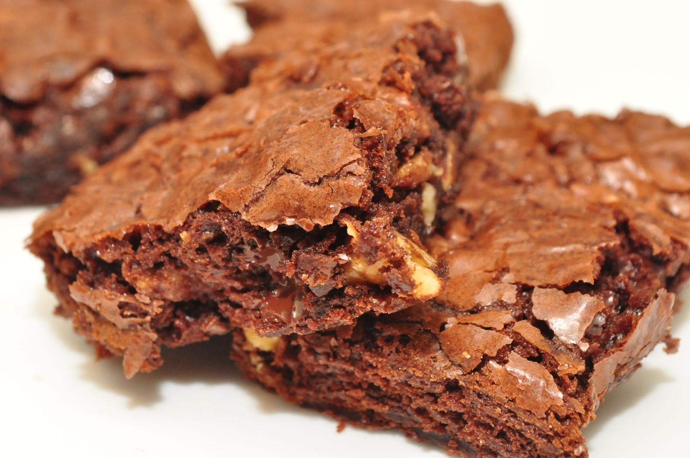
Brownie
Y bebidas, botanas y dulces. Toca cualquier platillo para ver qué contiene. Las fotos son de muestra.
Fotos (CC BY 2.0 salvo indicación): Andreanna Moya Photography · Pancuter Mandrade (CC0) · TheCulinaryGeek · @joefoodie · The MisAdventures of Maja · jeffreyw · blogefl (CC BY-SA 2.0) · TheBusyBrain · jeffreyw
Fadori. Instituto Rembrandt
Pide
Llegas al recreo y tu comida ya va en camino.
Fadori. Cooperativa sin filasLas reglas, atrás →
Juego limpio
Las reglasde la casa.
5
Hasta 5 pedidos por recreo Para que alcance para todos.
ID
Tu cuenta es tuya Correo, contraseña y tu credencial, una sola vez. Nadie pide a tu nombre.
$
Pagas al recoger En la cooperativa, cuando pasas por tu pedido.
×
¿Te arrepentiste? Cancelas desde «Tu turno» mientras siga en la fila.
¿Hambre?
Ni te formes.
Pídela
Foto: @joefoodie, CC BY 2.0
Fadori. Cooperativa sin filas¿Cuánto traes? atrás →
Nuevo truco
¿Cuánto
Dile a la app cuánto dinero traes y te arma combinaciones del menú que sí te alcanzan.
Pruébalo ahora
Está arriba del menú: «¿Cuánto traes? Te armo lo que sí alcanza».
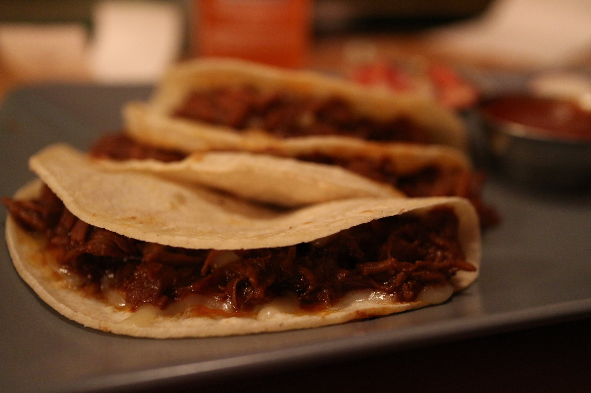
El recreo esno para formarse.
Foto: elsie.hui, CC BY 2.0
Fadori. Instituto RembrandtEscanea atrás →
Pensado para ti
Encuentra lo tuyoen un segundo.
⌕ Busca por nombre: torta, taco…
Plato fuerte Antojitos Tortas y sándwiches Bebidas Botanas Dulces y postres
¿Alergias? Toca cualquier platillo y dice qué contiene. Marca tus alergias y te avisamos cuando algo las lleve.
¿Sin señal? La app abre con lo último que viste y manda tu pedido sola en cuanto vuelve el internet.
Más
Menos
Foto: TheBusyBrain, CC BY 2.0
Fadori. Cooperativa sin filasInstituto Rembrandt
Proyecto STEAM
Una fila menoscambia todo el recreo.
1 Nadie hace bulto en el pasillo esperando.
2 La prefectura pasa y puede cuidar toda la escuela.
3 Comes con calma y te da tiempo de despejarte.
4 Regresas al salón con la energía ya gastada.
Hecho por alumnos
Fadori nació como proyecto STEAM del Instituto Rembrandt para resolver la fila de la cooperativa.
Dulces y postres
Lo dulcedrama.
Brownie, galletas, paletas y chocolates. Pídelos y pasa cuando estén listos.
Foto: jeffreyw, CC BY 2.0
Fadori. Cooperativa sin filasBebidas y botanas atrás →
Para acompañar
Algo frío,algo crujiente.
Lo que haya en la cooperativa ese día. Las marcas son de sus dueños.
El caféte espera a ti.
Foto: Bryan Pocius, CC BY 2.0
Fadori. Capuchino en la appTu código, atrás →
Al recoger
Tu pedidotiene código.
Cuando esté listo, di tu código en el mostrador. Así nadie se lleva lo tuyo.
¡Ya
Pide Fadori. Instituto Rembrandt
Escanea.Come.
Apunta tu cámara aquí Fadori. La cooperativa sin filasPreguntas, atrás →
Preguntasfrecuentes.
¿Cómo pido? Elige en el menú, toca Pedir y te damos un turno. Pasas cuando tu número salga en verde en la pantalla.
¿Necesito cuenta? Sí, una sola vez: tu correo, una contraseña y la foto de tu credencial del Rembrandt.
¿Cómo pago? En la cooperativa, al recoger.
¿Cuántos pedidos puedo hacer? Hasta 5 por recreo.
¿Y si se acaba algo? La app te avisa y eliges otra cosa o lo quitas. No pierdes tu lugar.
¿Puedo cancelar? Sí, desde «Tu turno», mientras siga en la fila.
¿Quién ve mis datos? La cooperativa, para entregarte. Otros alumnos no ven nada tuyo.
¿Sin internet? Abre con lo último que viste y manda tu pedido cuando vuelve la señal.
¿Otra duda? En la app, toca el ? de arriba: ahí están todas las respuestas.
Tu tortaya tiene número.
TU NÚMERO
12
Listo en ~6 min
Foto: Pancuter Mandrade, Wikimedia Commons (CC0)
Fadori. Cooperativa sin filasEscanea atrás →
¿Vas para allá?
Dinos«voy en camino».
Un toque desde «Tu turno» y la cooperativa sabe que ya vas. Y si de plano hoy no puedes ir, también lo dices desde ahí.
Tu número y cuántos van antes que tú.
Cuánto falta «Listo en ~9 min».
Lo que pediste con su precio, para que no haya sorpresas.
Fadori. Instituto Rembrandt
La cooperativasin filas.
Fadori. Instituto RembrandtEl menú completo, atrás →
El menúen la app.
Escanea
Plato fuerte Enchiladas verdes
Antojitos Banderilla · Pizza individual · Tacos de arrachera, bistec, chorizo y choriqueso · Órdenes de 3 tacos · Quesadilla · Quesadilla con carne · Maruchan
Tortas y sándwiches Torta de milanesa · Hamburguesa · Hot dog · Molletes
Bebidas Coca-Cola 600 ml y chica · Arizona · Boing · Gatorade · Agua 600 ml, de litro y mineral · Yakult · Café capuchino
Botanas Takis Fuego · Doritos Dinamita · Tostitos salsa verde · Cheetos Flamin’ Hot · Crujientes · Chip’s jalapeño · Cacahuates japoneses
Dulces y postres Brownie · Galletas blandas y comerciales · Snickers · Milky Way · M&M’s · Kinder Delice · Carlos V · Peelerz · Halls · Tutsi Pop · Pelonetas · Pelón · Tix Tix · Mazapán · Paletas de mango y de elote · Tarrito
Precios y lo que hay hoy, siempre al día en la app. Si algo se acaba, la app lo dice antes de que lo pidas.
Fadori. Instituto Rembrandt